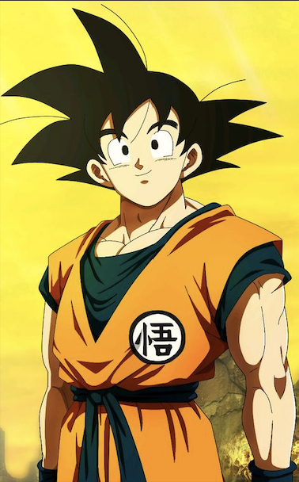

Goku
Son Goku (Kakarot)

First Appearance
Dragon Ball Chapter 1 (1985)
Likes
Fighting, Training, Eating, His family
Dislikes
Killing, Those who hurt his friends and family
Appears in
Dragon Ball, Dragon Ball Z, Dragon Ball Super, Dragon Ball GT
Biography
Goku is the protagonist of the Dragon Ball series. First appearing in chapter 1 of the original
manga, Goku has been a popular anime character since his creation in 1985. Originally a curious martial arts
prodigy as a child, as the series evolved it was revealed that Goku was a member of an alien species called
the saiyans and was sent to Earth following the destruction of his planet. (Show More)
Special Moves
Kamehameha: A blue beam of energy that emenates from Goku's hands.
Taught to him by Master Roshi in the original Dragon Ball. This is Goku's most used special move.
Spirit Bomb: A ball of energy charged up by the life energy of those Goku asks. Taught to him by King Kai, this is Goku's most powerful attack.
The energy ball was used to defeat many enemies and is generally used as a last resort due to its long charge up time.
Dragon Fist: A punch of great energy in the form of a Dragon. While not appearing in the original source material, this
move is unique as it is one of the only moves that Goku created rather than being taught it.
Transformations
Kaioken: Taught this by King Kai, Kaioken is Goku's second major transformation of the series.
Enveloped by red energy, Goku's strength is multiplied to a great extent. First used to defeat Vegeta during their
first battle.
Super Saiyan: Awakened against Frieza when Frieza killed Goku's best friend, the Super Saiyan transformation is
one of Goku's ultimate techniques. Goku's energy and hair becomes gold while his eyes glow green. When in this form,
Goku is 100x stronger than his base strength.
Super Saiyan God: Super Saiyan God is unique in the sense that Goku couldn't attain it on his own. He needed the help of his
friends to attain it. This form is many times stronger to normal Super Saiyan and allows Goku to use God Ki rather than normal energy.
Goku's hairs and eyes become red and his body thins a bit allowing him to be faster than usual.
.jpg){kind=link}


{kind=link}
{kind=link}